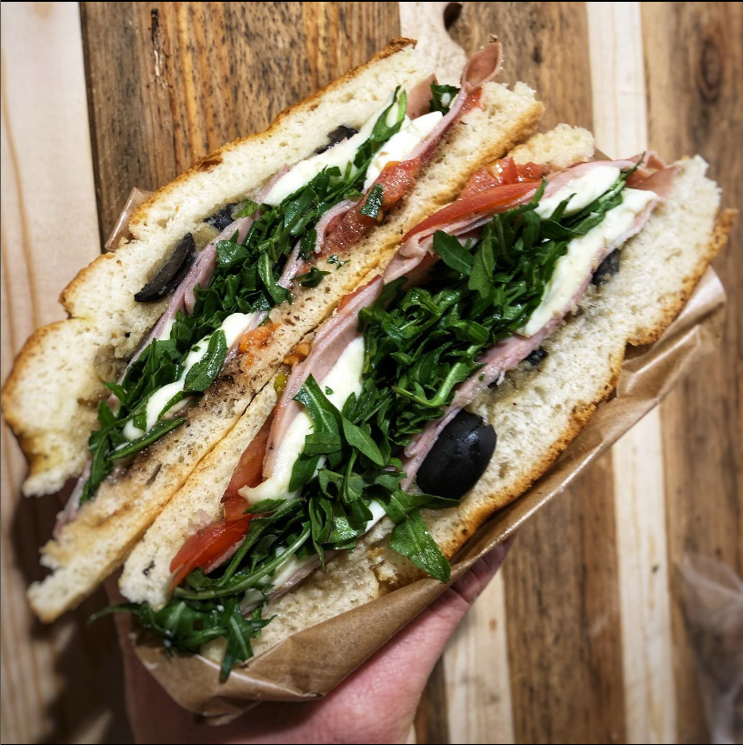

Sandwich Medicis

Description:
That's a sandwich i often do at work, one of our Bestseller.
He's simple, easy to do and you can eat it even hot or cold.
Ingredients:
You'll need to have a few little things !
- Foccacia bread
- Vinegar balsamic
- Rucola pesto
- Black olive
- Fresh sliced tomatoes
- Mortadelle with truffle
- Mozzarella
- Rucola salad
The Steps !
- Cut the Foccacia bread in half, and spread out the Pesto and the Balsamic on each part.
- Add some Black Olive, sliced Tomatoes, Mortadelle and Mozzarella on top of it !
- You can melt the mozzarella as well in the Oven, 30s to 1mn at 275°.
- Finish the sandwich by adding a bunch of Rucola salad